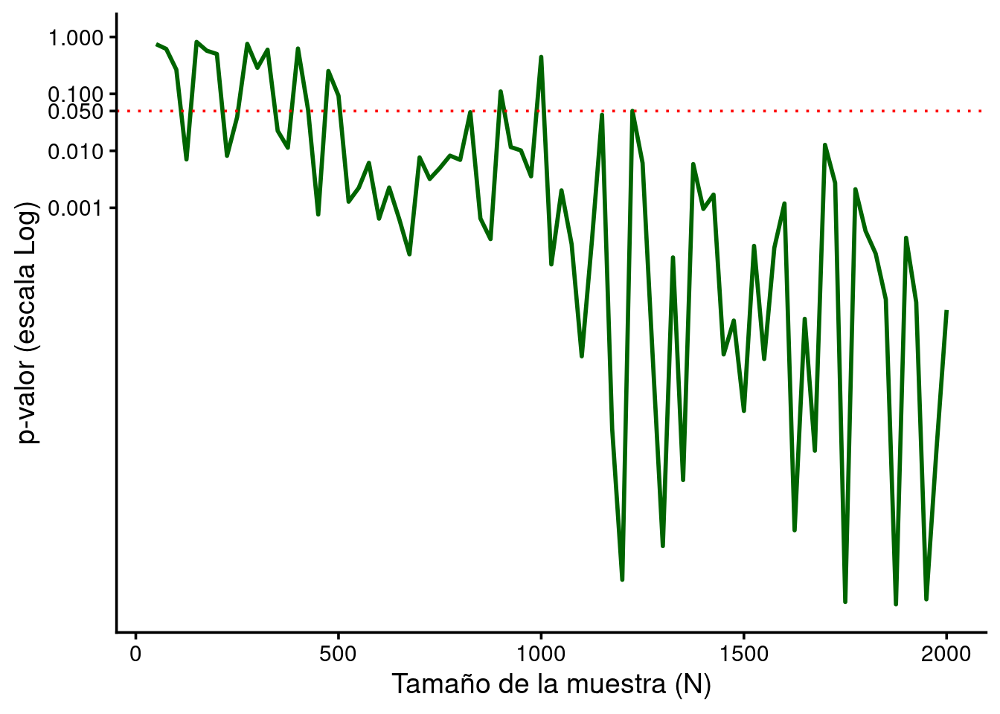
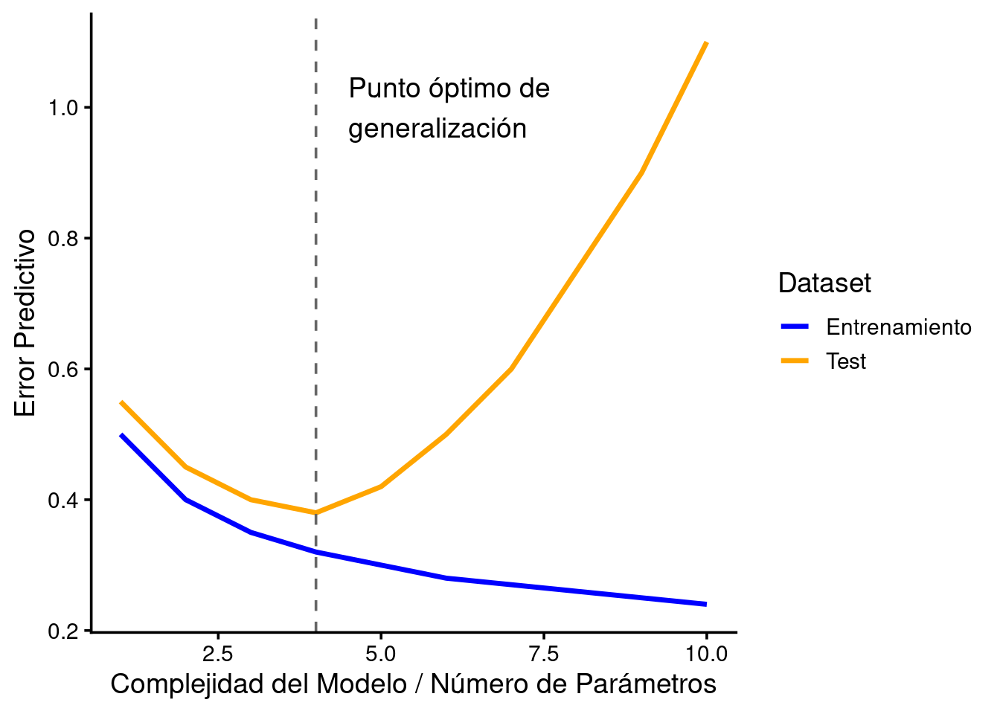

La paradoja de la escala: del sesgo por ‘n’ pequeño a la tiranía del Big Data
La validez externa no es solo la capacidad de “generalizar”, también es la capacidad para que los hallazgos en investigación sobrevivan al contacto con la realidad. Tradicionalmente en psicología existía cierta confianza en las muestras de conveniencia, derivado en parte de las necesidades económicas en la investigación (las muestras compuestas por estudiantes universitarios desde luego son las más sencillas y baratas), lo que daba resultados, en el mejor de los casos, idiosincráticos. En la otra vertiente, la de estudios mejor financiados, también existía cierta fe cuando las muestras eran mayores de 30-50 participantes, dado que se suelen cumplir los requisitos de las pruebas estadísticas más usadas.
El “error de los pocos”
En ciencias de la salud el trabajo con muestras pequeñas es, en ocasiones, inevitable. Por cercanía clínica, por determinante económico, por ausencia de pacientes con ciertas condiciones en un área de salud determinada o por falta de voluntarios (según el objeto de investigación), los estudios se abocan a una metodología peligrosa. Las principales repercusiones de tener grupos pequeños son:
- Poder estadístico (\(1-\beta\)): solo los efectos grandes son detectables. Esto lleva al famoso sesgo de publicación, dado que se publica lo “significativo”, que suele ser una sobreestimación del efecto real
- Inestabilidad: un solo dato extremo en una muestra de 15 personas puede crear una correlación alta de la nada.

La trampa del Big Data: el p-valor como ruido
Hoy en día este es un punto clave. En la era de los grandes volúmenes de datos y el machine learning el valor p tradicional (el marcado arbitrariamente como significativo con el famoso \(p<.05\)) pierde el sentido original. En este contexto el problema principal es la sensibilidad extrema. Con muestras grandes (\(N>1000\)) el error estándar tiende a cero (recordando su fórmula, \(SE = \frac{\sigma}{\sqrt n}\), un aumento del denominador con la misma desviación típica produce un error estándar menor). Esto viene a decir que cualquier diferencia mínima, por pequeña o irrelevante que sea a nivel práctico, será “estadísticamente significativa”. En el siguiente gráfico se representa el valor p de una correlación \(r_{xy}=0.05\) (una variable X aleatoria y una variable \(Y=0.05x + \epsilon\), \(\epsilon \sim N(0, 0.5)\)) según el tamaño de la muestra; se ve claramente a partir de 1000 “participantes” los valores p son menores a .05 pese a que la correlación no ha variado en ningún punto, simplemente el tamaño de la muestra ha hecho que la prueba estadística tenga la suficiente potencia para detectar una correlación mínima.

En este punto es necesario distinguir de manera precisa la significancia estadística del tamaño del efecto: mientras que la significancia es arbitraria (marcamos el valor \(\alpha\) donde suponemos que el error del falso positivo es aceptable) y tiene una serie de problemas tratados ampliamente por la American Statistical Association, por ejemplo en Yaddanapudi (2016), el tamaño del efecto es una medida de la fuerza de un fenómeno, como el cambio surgido durante un experimento, emanado de los datos (es un estadístico descriptivo en términos estrictos). Por ejemplo, la correlación puede ser, bajo ciertas condiciones, un tamaño de efecto que, en el caso del ejemplo anterior, era mínimo.
El sobreajuste
Otro leitmotiv del análisis de datos modernos. En el aprendizaje automático el exceso de parámetros en relación con la muestra o el entrenamiento excesivo con un conjunto de datos, aunque tenga poco sesgo, puede destruir la validez externa. El modelo “memoriza” la relación entre los datos existentes, pero no “aprende” un patrón general de cómo podrían relacionarse las variables en un entorno ecológico. Puede darse (y se da) el caso de modelos que explican casi el \(100\%\) de la varianza pero fallan estrepitosamente en la predicción de nuevos casos. En entornos sanitarios, además, hay que tener en cuenta que modelos que trabajan con datos biomédicos que incorporan transcripciones o valoraciones clínicas pueden convertirse en una manera cara de tirar el dinero, dado que no son datos tipificados que una herramienta estadística pueda aprovechar.

En el gráfico se representa, con datos simulados, el concepto de “punto óptimo” para que un modelo sea generalizable. A partir de ese punto existiría un sobreajuste que provocaría el aumento del error con datos con los que no hubiera sido entrenado.
Posibles soluciones
Como siempre ha ocurrido, cada problema requiere de un estudio pormenorizado de las fortalezas y debilidades para proponer la solución más adecuada. Desde la metodología se suelen proponer diferentes alternativas para trabajar con estos problemas:
- Enfoque en el Tamaño del efecto(\(\eta^2,\ d\ de\ Cohen,\ etc\)). No se trata de decir si algo es significativo, sino de si algo importa
- Validación cruzada. Esencial en aprendizaje automático, pero aplicable a los modelos tradicionales, no existe la validez externa sin poner a prueba el modelo con datos que no conoce
- Análisis Bayesiano. Los factores de Bayes pueden evaluar la evidencia a favor de la hipótesis nula, algo que los valores p no permiten
- Equivalenciay pruebas TOST. Busca probar que dos grupos son iguales en lugar de buscar diferencias